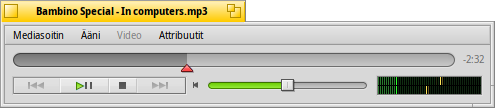
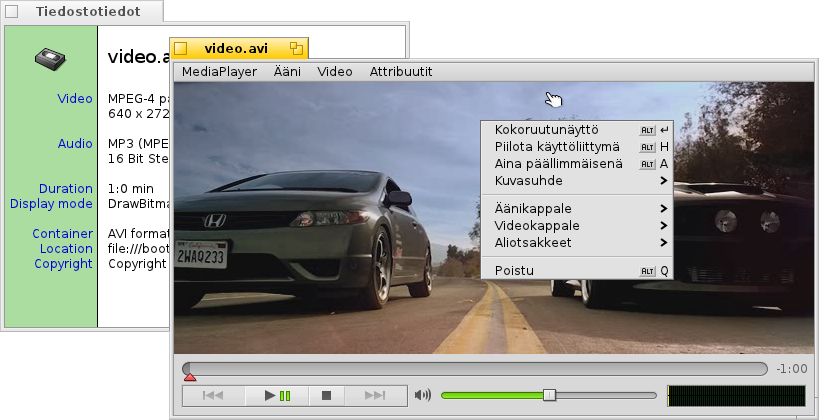
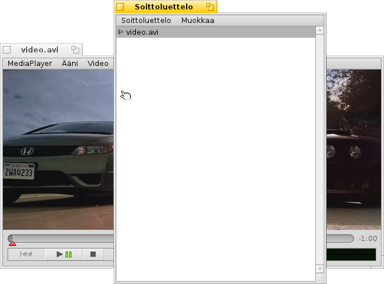
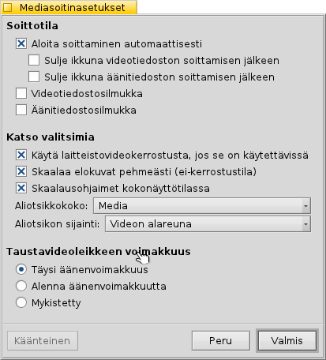

Suomi
Suomi Català
Català Deutsch
Deutsch English
English Español
Español Français
Français Italiano
Italiano Magyar
Magyar Polski
Polski Português
Português Português (Brazil)
Português (Brazil) Română
Română Slovenčina
Slovenčina Svenska
Svenska 中文 ［中文］
中文 ［中文］ Русский
Русский Українська
Українська 日本語
日本語 Mediasoitin
Mediasoitin
| Työpöytäpalkki: | ||
| Sijainti: | /boot/system/apps/MediaPlayer | |
| Asetukset: | ~/config/settings/MediaPlayer |
Mediasoitin on kaikkien ääni- ja videotiedostojen oletussoitin. Kiitos sen ffmpeg-taustaohjelman, se tukee laajaa joukkoa käytettyjä tiedostomuotoja. Sen yksinkertaisessa käyttöliittymässä on kaikki odottamasi ohjainpainikkeet:
Edistymispalkin liukukytkin sallii sinun vaihtaa nopeasti sijaintia. Hiiren kohdistimen pitäminen palkin päällä näyttää nykyisen ajan ja leikkeen jäljellä olevan ajan. Oikealla olevan aika-näytön napsauttaminen vuorottelee pituuden, nykyisen ja jäljellä olevan ajan välillä.
Sen alta löydät tavalliset ohjaimet paluuseen edelliseen kappaleeseen, soitolle, tauolle, pysähtymiselle ja siirtymiselle seuraavaan kappaleeseen. Sitten on äänenvoimakkuuden säädin (kaiutinsymbolin napsauttaminen vuorottelee mykistämistä) ja voltti-/jännitemittari.
Ääni- ja videosoitto
Koska äänisoitossa ei ole mitään erikoisominaisuuksia, siirrymme suoraan videoon ja yleisiin ominaisuuksiin.
Kaikille medioille on käytettävissä valikko (ALT I). Se näyttää tiedot parhaillaan ladatusta tiedostosta, kuten soittoajan tai ääni- tai videokappaleen yksityiskohdata ja sen koodekin.
Useimmin käytetyt valikkokomennot ovat käytettävissä myös videoalueella hiiren kakkospainikkeen asiayhteysvalikosta. Se näppärää, kun ollaan kokonäyttötilassa.
Valikon alta löydät valitsimia kaventaa tai laajentaa ikkunaa eri tasoille tai pakottamiseksi vaioarvoiseen kuvasuhteisiin. Kuvasuhteen jättämiseksi oletukseen pitäisi toimia parhaiten oikein koodatuilla tiedostoilla.
Mediasoitin tukee aliotsikoita SRT-muodossa. Jotta ne näkyvät valikon alla, niiden tiedostonimet ovat samat kuin niiden videotiedostonimet, kielinimitarkentimella ja tarkentimella ".srt" eikä videotarkentimella. Esimerkiksi:
MyMovie.avi MyMovie.Deutsch.srt MyMovie.English.srt MyMovie.Français.srt
Moniäänikappaleet, useimmiten käytetty useaa kieltä varten yhden videotiedoston sisällä, ovat käytettävissä alivalikosta . Alivalikko tarjoaa saman, kun useita videovirtoja on käytettävissä.
Voit vuorotella -tilaa (ALT ENTER tai F tai hiiren ykköspainikkeen kaksoisnapsautuksella), piilottaa Mediasoittimen ikkunarajat ja ohjaimet (ALT H tai hiiren kakkospainikkeen kaksoisnapsautuksella) tai pitää sen ikkunaa (ALT A).
Soittoluettelot
(ALT P) avaa ikkunan, jossa näkyy soittamista odottavien tiedostojen jono. Rivin kaksoisnapsautus aloittaa sen soittamisen.
Voit lisätä lisää tiedostoja pudottamalla ne luetteloon ja järjestämällä niiden sijainti raahaa ja pudota -toiminnolla. Valikosta voit a tai a (DEL) luettelorivin tai poistaa todellisen tiedoston valikkolla (ALT T).
Voit tietysti tallentaa valikolla soittoluettelon ja myöhemmin avata se uudelleen valikolla , tai aloittaa se yksinkertaisesti kaksoisnapsauttamalla soittoluettelotiedostoa.
Asetukset
Mediasoittimen käyttäytymisen hienosäätöön on useita asetuksia:
Ensimmäinen kohta, , on aika itsestäänselvä. Aloita soittaminen automaattisesti, sulje ikkunat kun lopetetaan tai soita leikkeitä silmukassa.
Seuraavana on erilainen .
Voit valita , mikä alentaa suoritinkäyttöä, mutta toimii vain yhdessä videoikkunassa ja tarvitsee tukevan videokorttiajurin.
Voit valita (kun ei olla kerrostustilassa) mikä käyttää hyvin nopeaa suodatusta pehmentäen muuten lohkomaisia pikseleitä, kun kavennetaan videonäkymää tai katsotaan kokonäyttötilassa.
jos pidät parempana hiukan isompia ohjaimia, ehkä katselet näyttöä hiukan kauempaa kokonäyttötilassa.
Sitten on asetukset ja . Ne voidaan näyttää ssa, jossa ne ovat aina kuvan päällä. Tai , mikä sallii sinun muuttaa ikkunan kokoa pystysuoraan ja näyttää aliotsikot sen sijaan alhaalla mustana palkkina.
Viimeinen asetus määrittelee äänenvoimakkuuden niille leikkeille, jotka eivät ole parhaillaan aktiviisia. Voit kailottaa niitä kaikkia voimakkuudella , vähemmän häiritsevällä tai hiljentää .
Näppäimistöohjaimet
Mediasoitin tarjoaa näppäriä näppäinyhdistelmiä soiton ohjaamiseksi ilman hiiren käyttöä.
| Z | Hyppää edelliseen kappaleeseen | |
| X | Soita | |
| C | Tauko | |
| V | Pysäytä | |
| B | Hyppää seuraavaan kappaleeseen |
Nämä näppäimet on liitetty ohjainpainikkeiden toimintoihin. Ne ovat aina näppäimistön vasemman alakulman näppäimiä, toisin sanoen riippumattomia nykyisestä näppäinkuvauksesta. Yllä olevat näppäimet vastaavat vakiota US-amerikkalaista näppäinkuvausta.
| ← / → | Etsi taaksepäin/eteenpäin | |
| VAIHTO ← / → | Hyppää taaksepäin/eteenpäin 10 sekuntia | |
| ALT ← / → | Hyppää taaksepäin/eteenpäin 30 sekuntia | |
| ↓ / ↑ | Vaimenna/Kasvata äänenvoimakkuutta | |
| ALT ↓ / ↑ | Hyppää seuraavaan/edelliseen Kappaleeseen | |
| Välilyöntipainike | Vuorottele soita/tauko -tiloja | |
| ALT ENTER | Vuorottele kokonäyttötila (tehdään myös kaksoisnapsauttamalla hiiren ykköspainikkeella videoaluetta tai painamalla F tai TAB) | |
| ALT VAIHTO 0 / 1 / 2 / 3 | Vaihtaa kuvasuhteen (kuinka video koodataan), (kartoittaa videon pikselit 1:1 näytölle), , |